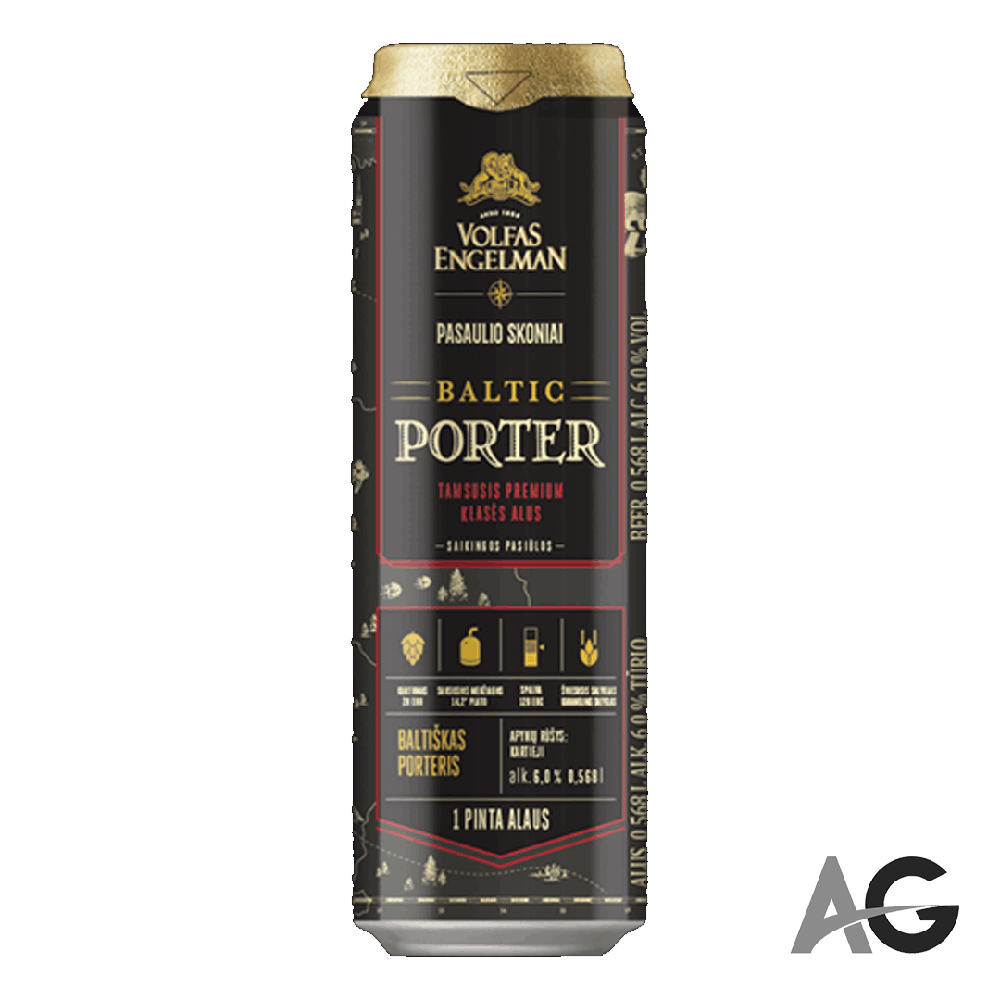

RASPBERRY PORTER
BEER MAIL
Dark and viscous beer texture is created by using caramel, roasted barley malt, hulled oats. The moderately noticeable raspberry makes it a dessert type beer, therefore exclusive among the other porter beers.
BOHEMIJOS TAMSUSIS
ABV: 4.2%
Velvety dark, soft due to that especially suitable for summer evenings “BOHEMIJOS Tamsusis” beer has complemented the Volfas Engelman family.

VOLFAS ENGELMAN BALTIC PORTER
ABV: 6%
Baltic Porter is a beer type that is known as the only bottom-fermented porter in the world. It is a dark copper-brown beer with a thick head and a slightly sweet roasted caramel touch to the rich aroma.